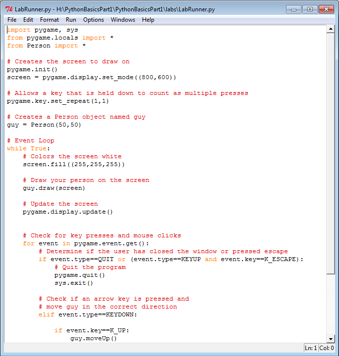
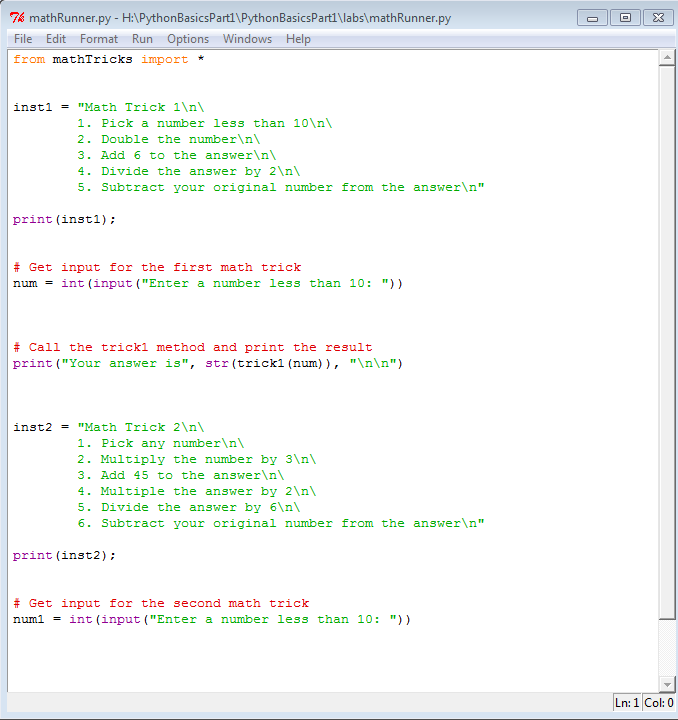
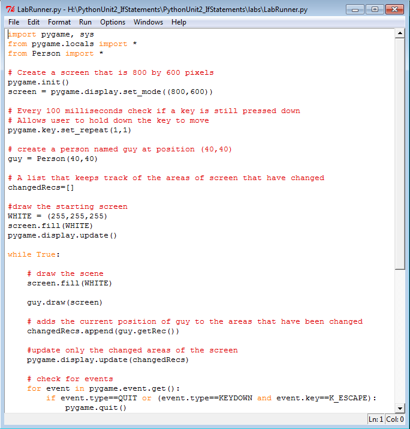
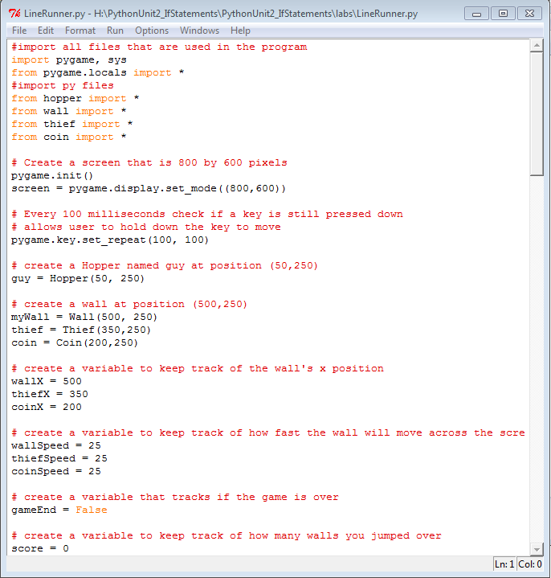
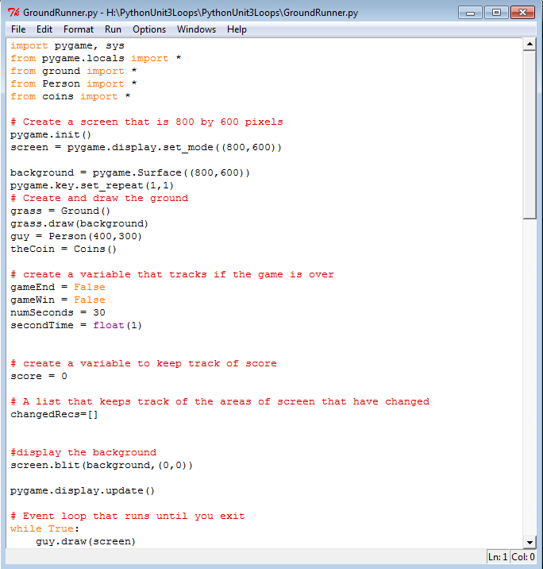
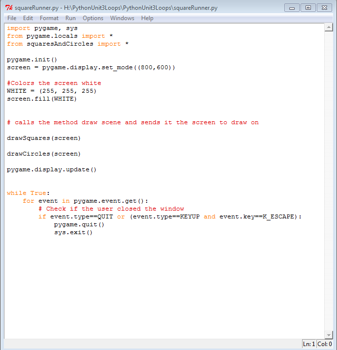
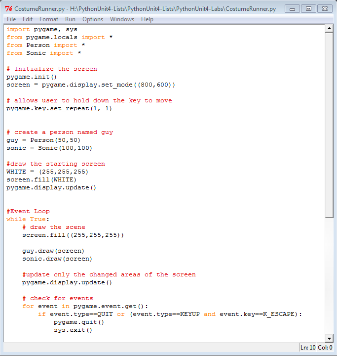
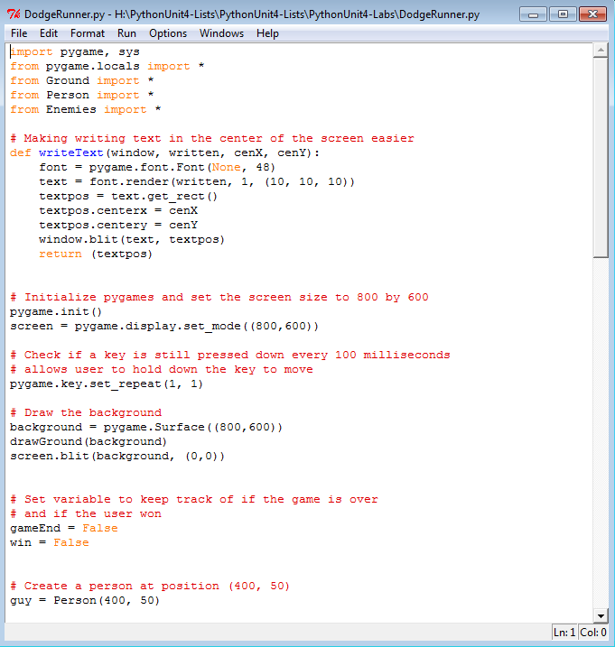

Python Unit 1


Description
In this lab, we were introduced into the world of Python. We learned a lot about the basics of it and how to do simple things like getting user inputs and printing values. We also learned about variables and data types such as booleans and integers.
Concepts Learned:
- how to print things in python
- getting user inputs
- python comments
- variables and data types
Python Unit 2


Description
In this lab, the main concept was if statements. We learned many different types of if statements including Ifs, If-elses, and If-elifs. We also leaned about operators that compare two different things. For example, >= and <=.
Concepts Learned:
- Ifs, If-elses,If-elifs Statements
- frequently used operators like == and !=
- nested if statements
Python Unit 3


Description
In this lab, the overarching idea was about loops. After completing this unit, I now know more about two types of loops: while and for loops. I also learned about pygame methods and random methods. These two were used to make many of the tasks we had in Unit 3.
Concepts Learned:
- while loops and for loops
- break keyword
- nested loops
- pygame methods
- using random methods
Python Unit 4


Description
This was the final unit of our journey through python. We learned how to use lists. Lists are very important since they are a very easy way to make many objects. Also, we learned about using indexes and adding and removing data from lists.
Concepts Learned:
- how to make lists
- using index to find values in lists
- frequently used list methods
- adding and removing data in a list